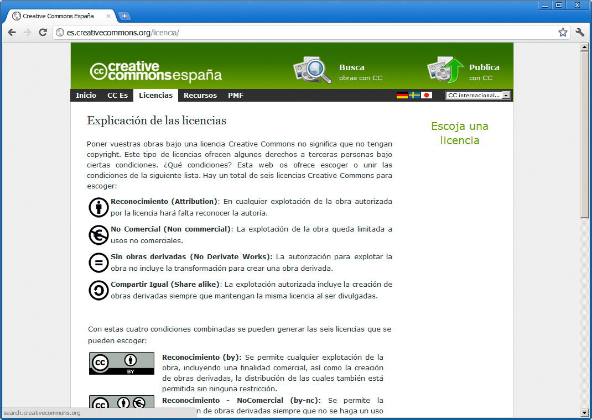
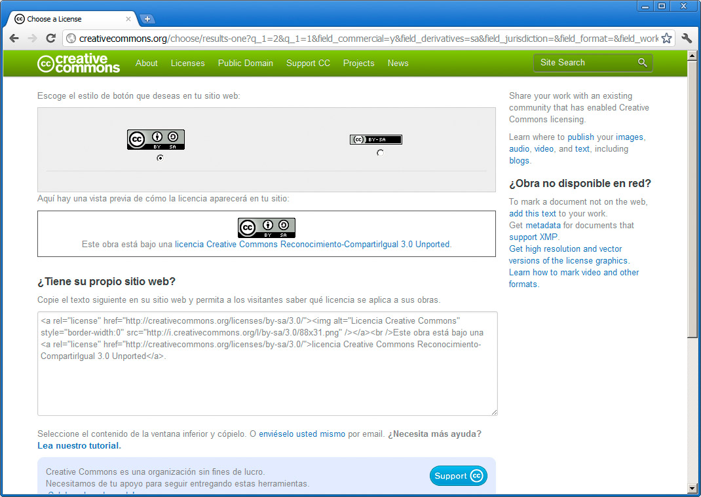
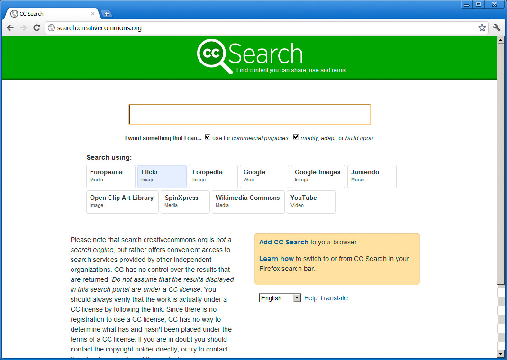

En el mundo actual, donde los usuarios nos convertimos en generadores de contenidos, los modelos obsoletos de derechos de autor tienden a revisarse y surgen iniciativas como la licencia Creative Commons.
Ya hemos hablado de ella anteriormente, pero lo traemos de nuevo a colación como uno de los caminos que cualquier autor de contenidos debería explorar y plantearse.
La web de Creative Commons nos facilita un pequeño generador de licencias, que nos aportará el texto legal que podemos incoporar a nuestra página web, si decidimos distribuirla en este modo.
http://es.creativecommons.org/licencia/
En la página de la figura podemos hacer clic en el enlace Escoja una licencia en la parte derecha, para comenzar un proceso en el que podremos definir qué nivel de reconocimiento y uso de nuestra obra queremos permitir.

Al finalizar, llegaremos a la página de la figura, desde donde nos podremos descargar los datos de la licencia en diferentes formatos, para incluirlos en nuestros documentos, página web, etc.

Buscar recursos Creative Commons
A través de un enlace en la página principal de Creative Commons podemos llegar a la página de la figura:
http://search.creativecommons.org/

En ella podemos buscar obras licenciadas como Creative Commons a través de varios sitios web diferentes. Todos esos recursos pueden ser empleados libremente en nuestras páginas web mientras respetemos las indicaciones de su licencia.
Pregunta Verdadero-Falso
Verdadero Falso